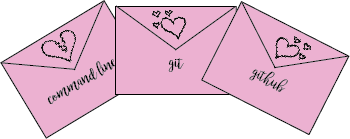
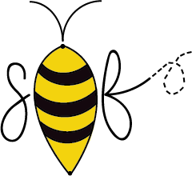

Check out my GitHub repository to see all of my projects in depth!
Bash About Me Page
First project entirely made on the command line (includes creating the file, putting it on the server and so on).
Love Letters

Project that explains basic functionality for Git, GitHub, and the Windows Command Line via love and breakup letters.
Exquisite Corpse
Group project in which each member wrote paragraphs only by reading the previous paragraph to write a creative piece. This progressed skills in Git, GitHub and Command Line as we pushed changes and dealt with merge conflicts.
Custom Boilerplate

Project in which I coded my own custom boilerplate using SASS, HTML, CSS as well as my own favicon and so on.
Sprite Sheet
Project containing icons that I created using sprite sheets as well as Photoshop in order to alter how the buttons change on hover.
Sprite Animation
Another project focusing on sprite sheets that uses photos in order to create an animation or gif-like graphic using Photoshop.
Parallax Scrolling Story
Project focusing on parallax scrolling in which elements move at different speeds. This project was about a few of my favorite adventures while I was studying abroad. I used Photoshop to edit the photo backgrounds such that the graphic can easily move across the screen at a different speed.
AR Storm A Brewin'
An augmented reality game in which users search for ingredients for a witch to pass her final exams by scanning markers to collect items.